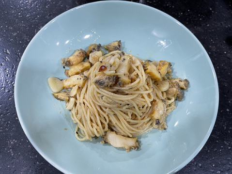

여러분들은 클래식 음악을 좋아하시나요?
저는 클래식 음악을 좋아합니다.
연차로 10년째 플룻을 연습하고 있습니다.
그 외에도 바이올린와 기타, 피아노를 해봤습니다.
평소에 잘때나 공부할때 클래식음악을 즐겨듣습니다.
주로 파가니니와 차이코프스키의 음악을 듣습니다.

그리고 요리하는 것을 좋아합니다.
주로 파스타와 고기를 이용한 요리를 합니다.
알리오 올리오, 훈제 삼겹살, 풀드포크 등
유튜브와 여러 매체에 나오는 것으로 연습했습니다.
그 외에도 다른 양식과 한식에 도전중입니다.
음악과 요리가 취미라면 요즘 관심사는 AI와 백엔드입니다.
앞으로 AI를 공부하기 위해 파이썬을 이용해 텐서플로우를 공부해보려합니다.
백엔드 지식을 더 쌓기 위해서 칼리리눅스와 네트워크관리사 자격증을 공부하려합니다.
그 외에도 C언어 같은 기본기를 다지기 위해 알고리즘을 공부중입니다.